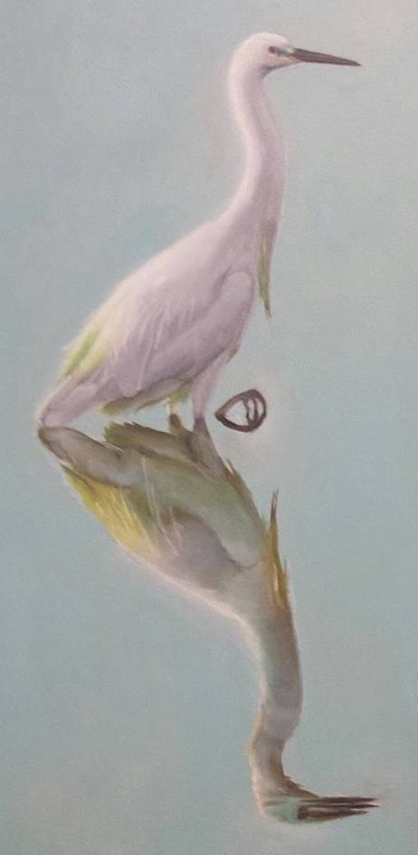

My name is Justin Tran.
I'm currently a full time software engineer living in Seattle and working at Qualtrics on the
Digital Experience team.
Click here to see more details on my engineering resume.
I also work in theatre as a music director, actor, accompanist, and conductor (or as any other job that I can get). Here's some of my past work:
-
Spring 2022: Working on Matilda Jr. as Associate Music Director at Village Theatre.
-
Working at Seattle Musical Theatre, where I music directed, conducted and
played piano in the pit for the 2019 winter show, Miracle on 34th Street.
-
Acting in Shakespeare's Julius Caesar with Willy's Dead Productions, here in Seattle.
-
Doing all sorts of work in the pit orchestra of the Anything Goes Musical Theatre Troupe at Cornell University
(including arranging, conducting, and accompanying).
-
My keyboard 1 credits include Les Miserables, Fiddler on the Roof, Beauty and the Beast, Titanic, and Cats
Click here to see more details on my theatre resume.
Oil painting highlights:
 |
|
 |